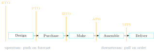

Model
Order fulfilment strategies
| Strategy | Starts after the order | Example |
|---|---|---|
| MTS make to stock | only delivery | Coca-Cola: all on forecast |
| ATO assemble to order | assembly | Dell: PC assembled on order |
| MTO make to order | production | Scavolini kitchens |
| PTO purchase to order | purchasing of special parts | special materials ordered |
| ETO engineer to order | design | Fincantieri ships |
The decoupling point (DP) divides order-driven activities (pull, downstream) from plan-driven ones (push, upstream, on forecast). Moving it upstream shortens stock but lengthens delivery time.
Bill of materials (BOM)
Structured list of all components, materials and sub-assemblies needed for a product, with quantities and hierarchy: what is needed, how much, how it is organized (tree: product → sub-assemblies → parts).
MRP and ERP
MRP (Material Requirements Planning): from finished-goods demand (MPS, Master Production Schedule), the BOM and inventory records, computes which materials are needed, in which quantity and when → production plan (PP). ERP (Enterprise Resource Planning): integrated information system planning and controlling all resources and processes on one shared database; includes MPS, MRP and PP.
Worked example
A bicycle = 1 frame + 2 wheels; a wheel = 1 rim + 36 spokes. MPS: 100 bikes in week 6. Stock: 20 wheels, 0 rims. Gross wheels = 200, net = 180 → rims 180, spokes . With 1-week lead times, wheels are released in week 5 and rims/spokes ordered in week 4 (lead-time offsetting).
Pitfall
MRP is only as good as the BOM and stock records ("garbage in, garbage out"). ATO needs modular products; MTO is not ETO (design already exists).
Recall
Place the DP for the five strategies with an example each; define BOM, MPS, MRP, ERP; run a two-level MRP explosion.
Picture

Each strategy places the decoupling point (amber line) at a different stage.